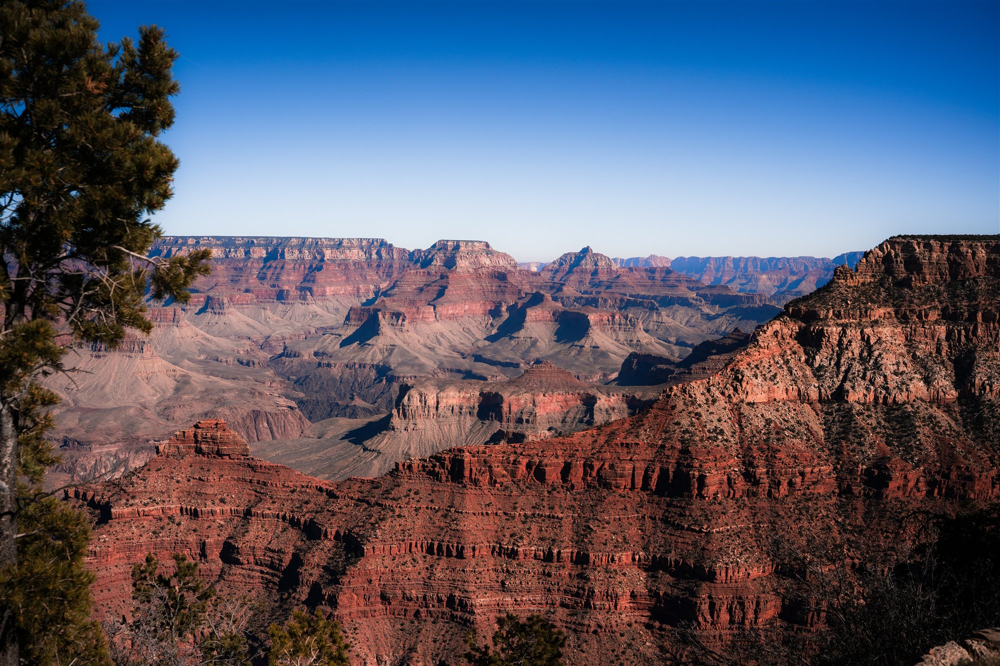
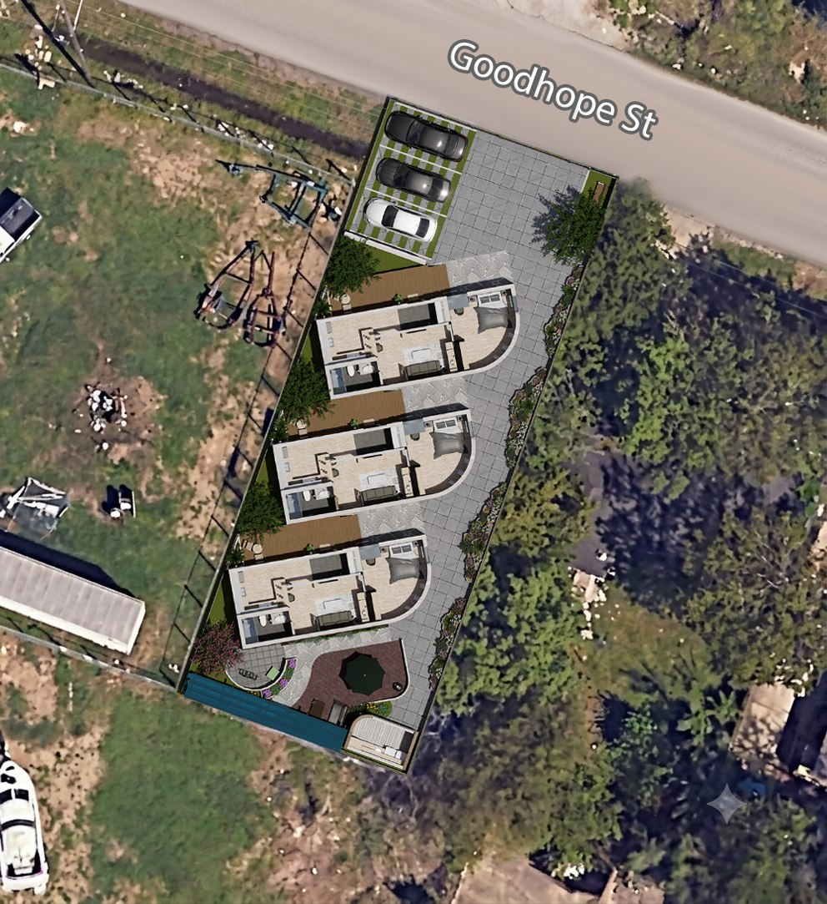
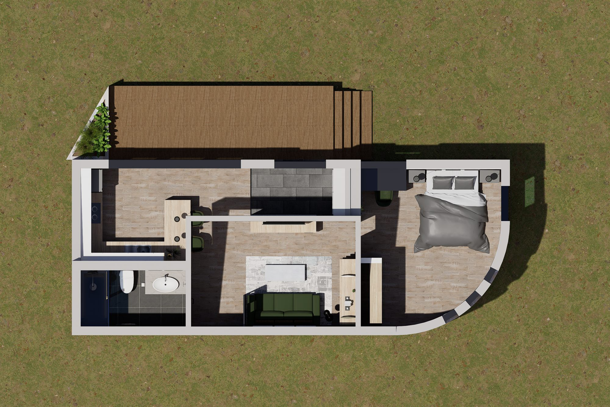
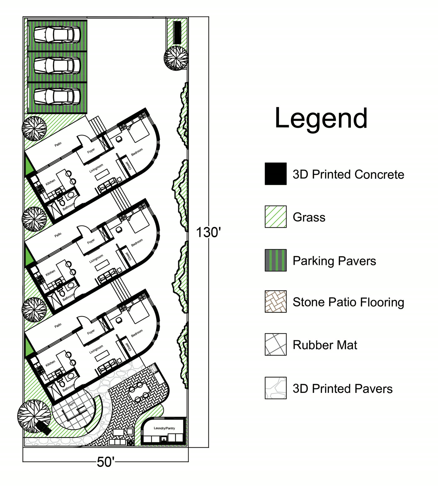
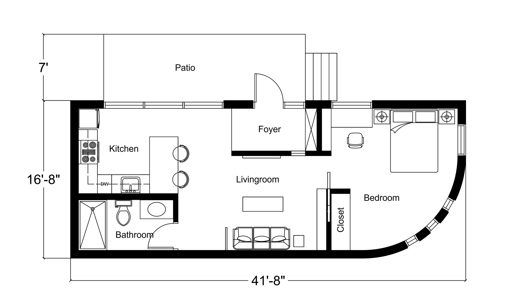
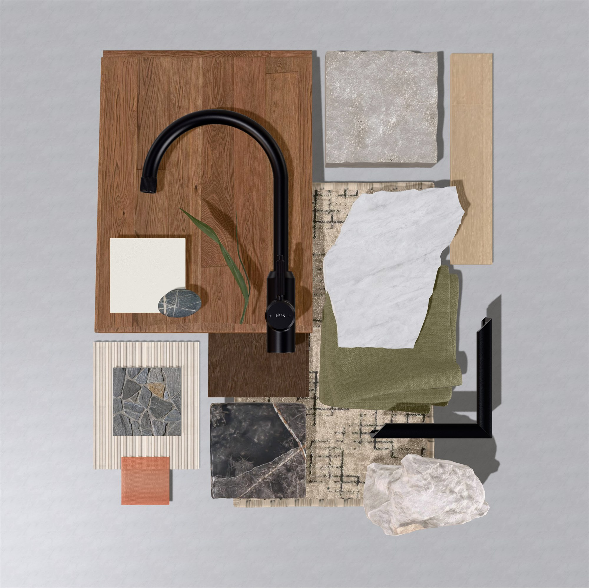

of Houston/Harris County's homeless population are men — the majority identified as single adults.
Source: 2025 Annual Homeless Count and Survey Analysis, Coalition for the Homeless of Houston/Harris County (CFTH)
The Problem
Extremely affordable housing, designed around dignity — not just shelter.
Strata of Dignity is designed for single men rebuilding stability after homelessness: compact living spaces that deliver maximum utility, comfort, and efficiency, at a cost extremely low-income occupants can sustain.
Working with NRCDC Houston — a nonprofit focused on affordable housing and neighborhood revitalization — the project is grounded in real need, not abstraction: safe, equitable housing that helps residents rebuild long-term stability and independence.

The Concept
Strata (n.): layers of rock or soil, formed over time.
Strata of Dignity transforms the metaphor of geological sediment layers into a framework for dignity, stability, and resilience. Inspired by rock formations shaped through time and pressure, the design reflects the layered hardships faced by underserved populations — reframing those experiences as a foundation for strength, rather than erosion.
Through additive manufacturing and layered concrete construction, each home becomes a physical expression of rebuilding: where accumulation over time is not a burden, but structure. The result is a compact, resilient housing system that translates life's pressures into permanence, stability, and renewed dignity.
The Site
Goodhope Street, Houston
3838 Goodhope St, Houston, TX 77021
The lot is a narrow, elongated rectangle whose edges don't align with true north, south, east, or west. Rather than force a rigid grid onto that geometry, all three homes are rotated 30° — turning the long facade of each house to face north-south and letting windows concentrate on the north and east sides only, for strong daylight without the harsh southwest summer sun.
The three homes are staggered across the site rather than lined up in a row, creating a rhythm that echoes geological strata while increasing privacy between residents. Parking sits along the perimeter to keep vehicles out of the community's interior and prioritize pedestrian movement, and circulation paths weave rather than run straight — reinforcing that same layered, organic feel.


Floor Plan
Compact by design, complete in function.
Every space is arranged around a single resident rebuilding stability — nothing borrowed from a family layout and shrunk down. The same orientation logic that rotated the site carries into each home: the northeast side stays cooler than the southwest, so the rooms residents use most sit toward the east, and the least-used sit toward the west. The foyer sets a deliberate threshold between shared and private life, and a clerestory window above brings in daylight while keeping sightlines, and privacy, exactly where they should be.
- Patio
- Foyer
- Living Room
- Kitchen
- Bathroom
- Closet
- Bedroom
Shared amenities: community gym, community & BBQ courtyard, a separate laundry & pantry building, and parking connect every home to a larger sense of belonging.
Documentation
The drawings behind the renders.


Room by room
Hover a photo to pause it, or use the arrows to browse.
Materials & Finishes
Layered concrete, warm wood, quiet detail.
Every wall is additively printed in visible horizontal layers — the sediment-like texture that gives Strata its name. White oak flooring, honed stone and marble, olive linen, and matte black fixtures keep the interiors calm, dignified, and human-scaled against the raw strength of the concrete shell.

Roof & Systems
Every layer, taken apart.
Scroll to explode the building into its layers — roof, structure, and foundation.
Keep scrolling
Performance & Resilience
Engineered for Houston's climate.
Beyond the concept, every material and form choice responds to the realities of building on the Gulf Coast — heat, wind, and water. Select a strategy below.
Passive Solar Design
Massing and orientation work with the sun's path rather than against it, cutting mechanical cooling loads before any equipment turns on.
Thermal Mass
The concrete shell itself absorbs and slowly releases heat, flattening indoor temperature swings between Houston's hot days and warm nights.
Insulation & Air Sealing
Printed concrete doubles as a natural insulator; the layered wall profile is modified specifically to reduce air leakage at every seam.
Sun Angle & Direction
The site's lot doesn't align with true north-south, so all three homes are rotated 30° — turning the long facade north-south and letting windows concentrate on the north and east only, away from Houston's harsh southwest summer sun.
Window Placement
Openings are positioned by orientation, not symmetry — daylight and cross-ventilation where they help, minimal glazing where the sun is harshest.
Wind Direction & Pressure Reduction
The roof is a clerestory form — high on the north, low on the south. Houston's prevailing summer wind comes from the southeast, so this slope reduces wind-pressure buildup at the roofline rather than fighting it head-on.
Heat Reduction
The same high-north, low-south slope also cuts heat gain from Houston's low southern sun angle, while deep overhangs throw shade onto the patios between homes to keep them cooler through the day.
Stack-Effect Ventilation
The clerestory windows are operable, so warm air rising to the ceiling escapes through the high openings, pulling cooler air in through lower windows and doors — natural convection that meaningfully cuts reliance on air conditioning.
Clerestory Roof
A single-slope clerestory roof sheds rainwater fast, simplifies the printed-concrete construction sequence, and reinforces the strata datum lines.
Light Leak
The homes are staggered so their roofs come close together over the shared patio. Where two roofs meet, a narrow gap is left on purpose — a shaft of daylight falls through and lands on the patio walkway below, a quiet symbol of hope.
Extended Overhang
Deeper-than-usual eaves push shade and rain further from the walls, protecting the facade and keeping the shared patios usable even in a downpour.
Houston's flood zone map places this site in a low-risk zone — but close to the edge of the draft 100-year floodplain, so it was designed for flooding anyway.
Flood Vents
Below one foot of wall height, engineered vents let rising water pass through the structure instead of building up pressure against it.
Raised Foundation
The finished floor is raised three feet above grade. Because the walls are 3D-printed, the extra structural sections that support it are designed directly into the print file, adding very little extra construction effort.
Gutters
Gutters along the clerestory roofline collect rainwater and feed it directly into the French drain below.
French Drain
A perforated subsurface drain line takes runoff from the gutters and carries it out to the street, keeping water moving away from the foundation.
Walkthrough